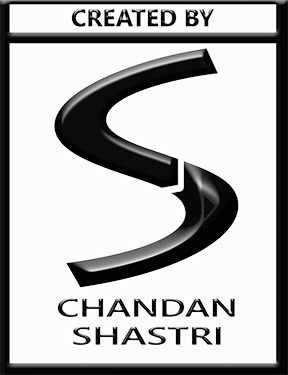

I am working on some other projects right now,
So, I didn't get enough time to work on my own Showcase...!
But, you can checkout my casual projects below:
Casual Research

I am working on some other projects right now,
So, I didn't get enough time to work on my own Showcase...!
But, you can checkout my casual projects below: